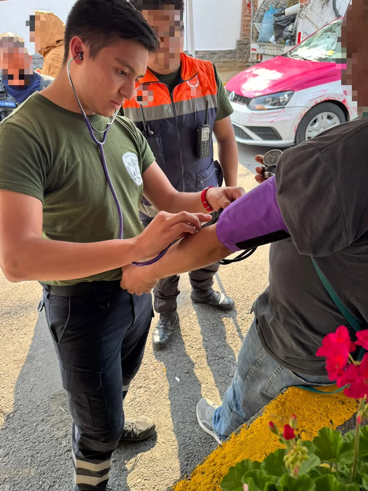

BITÁCORA 001
Masculino con descontrol hipertensivo.
02 de noviembre de 2024
Ciudad de México
Paciente masculino de 48 años refiriendo cefalea, con hallazgo de cifras tensionales elevadas (180/100 mmHg).
contenido protegido
Fotografía sin contenido explícito.
